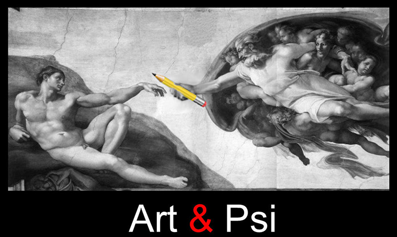

Bienvenue !
Soyez les bienvenus sur ce site dédié à la pratique du portrait médiumnique ou « portrait spirite ». Vous y découvrirez le visage de deux experts en la matière : Coral Polge et Frank Leah. Dans « Le Musée » sont exposés quelques résultats emblématiques de centaines de nos séances médiumniques. Ce site vous montre aussi comment obtenir pour vous-même une consultation si vous le souhaitez.